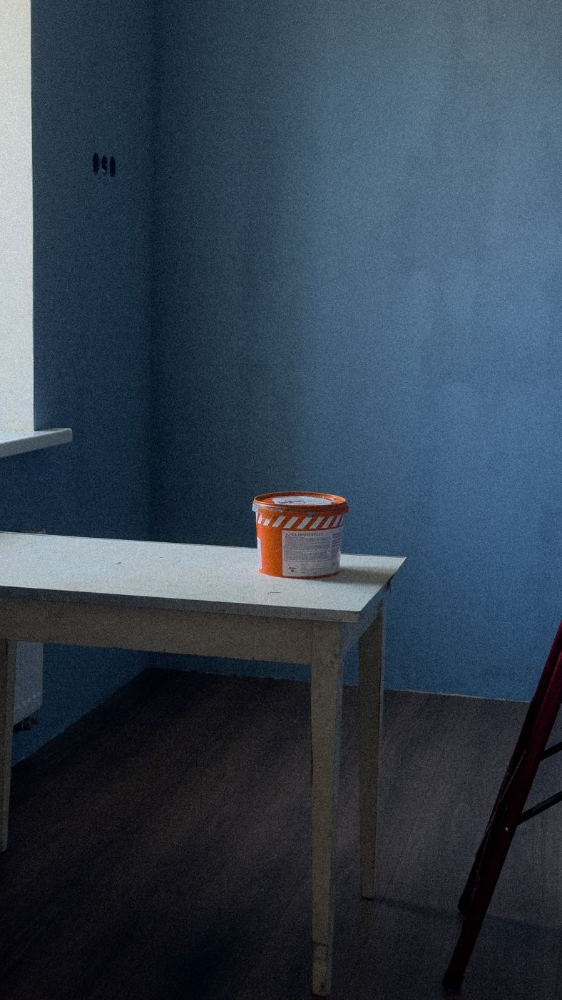
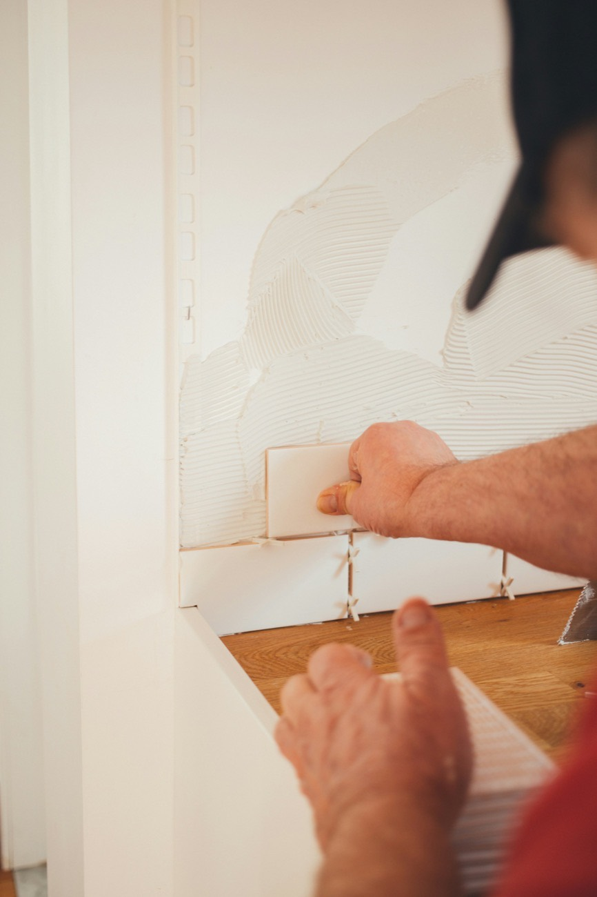
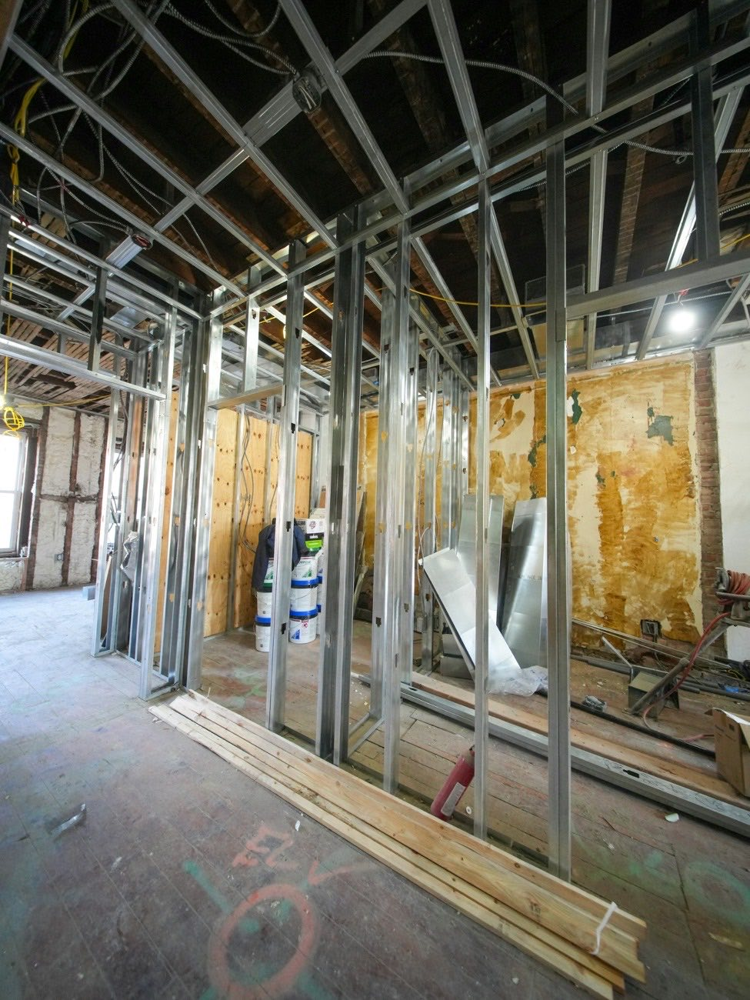
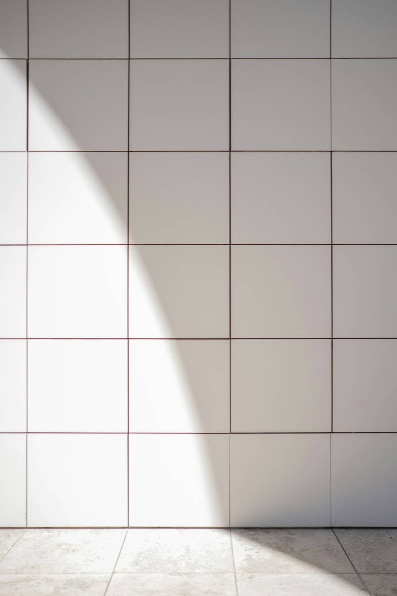
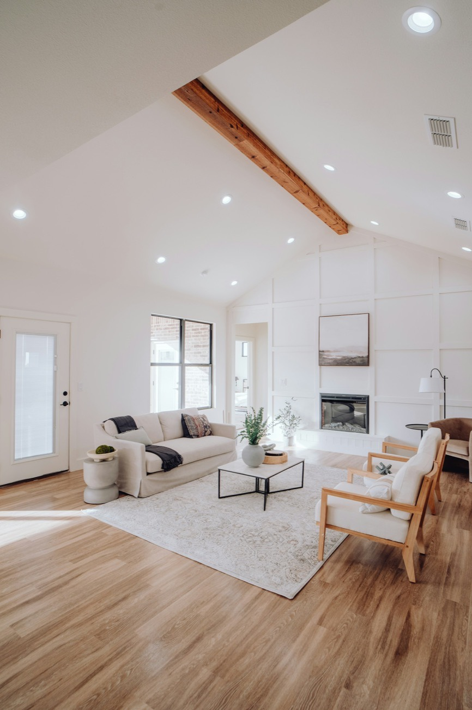
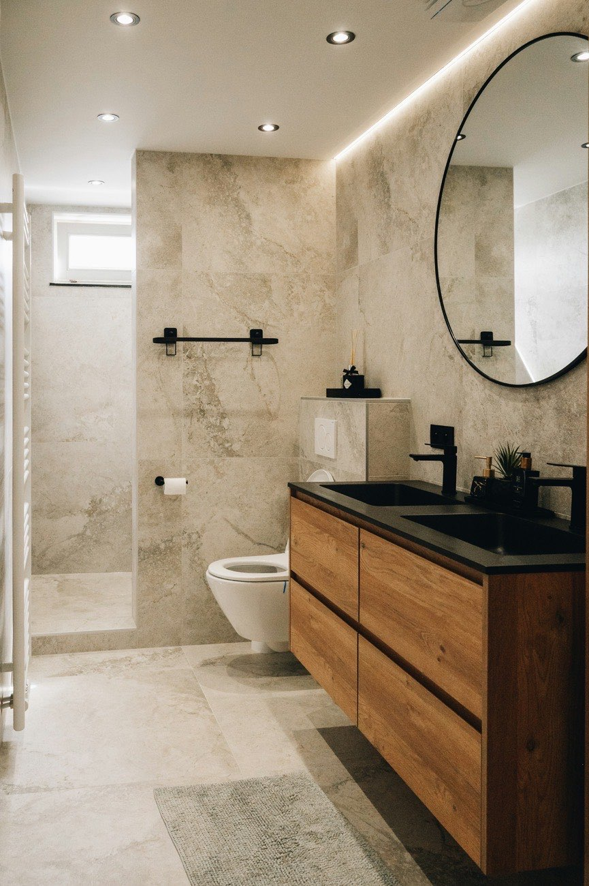
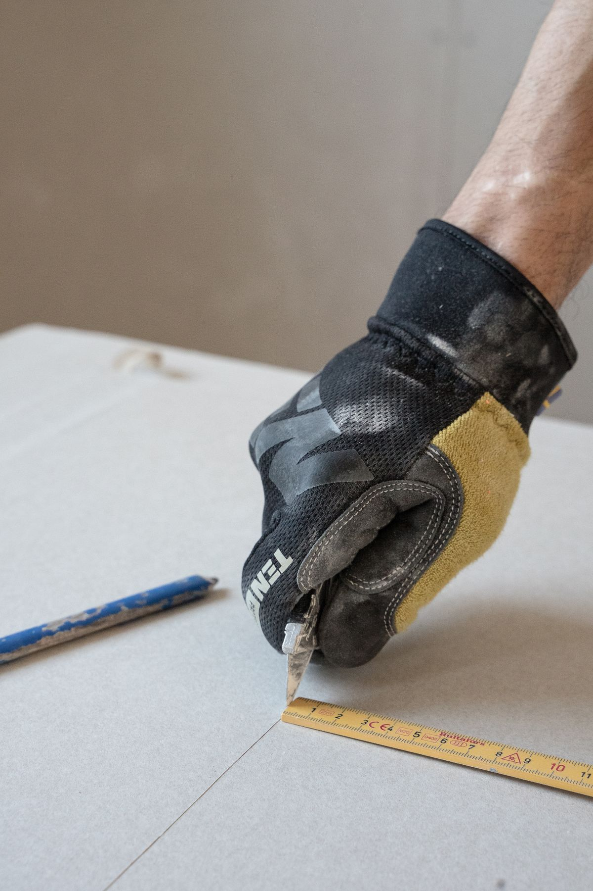
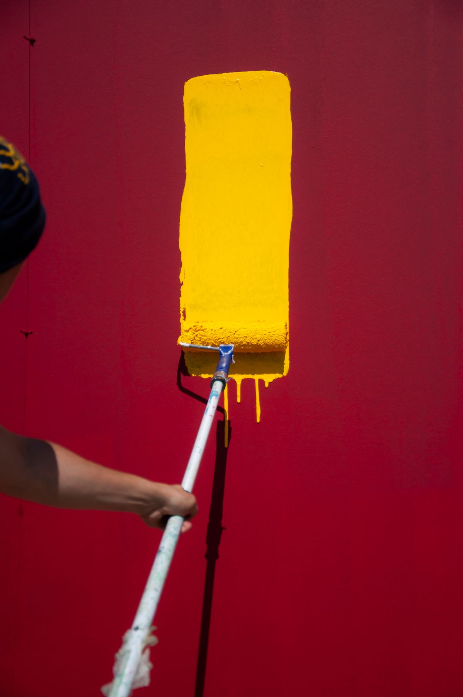
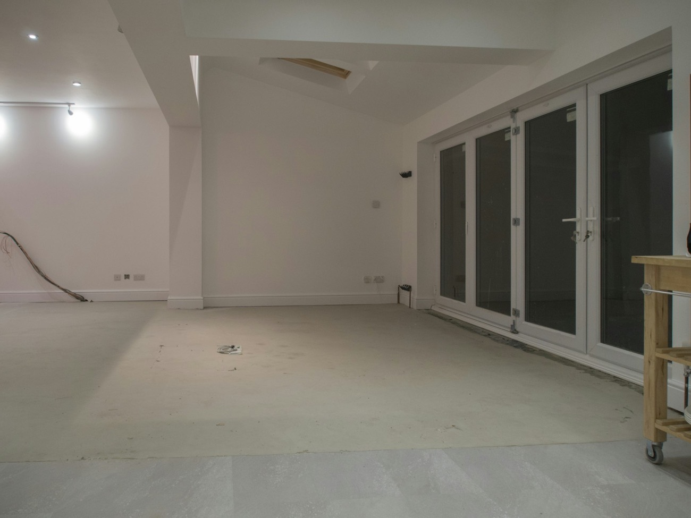

Villorba · provincia di Treviso
Pareti, pavimenti, finiture.
Pitture d'interni, cartongesso e posa di pavimenti in gres, legno e SPC. Con George Lupu e oltre 20 anni di mestiere.

20+ anni di mestiere- TitolareGeorge Lupu
- EsperienzaOltre 20 anni
- Google5,0 · 2 recensioni
- SedeVia S. Pio X 21, Villorba
Lavori
Una ditta, cinque mestieri della casa.
- 01Pitture d'interniStucco, fondo e due mani, con il prodotto giusto per ogni parete.
- 02CartongessoPareti, contropareti e controsoffitti.
- 03Pavimenti in gresPosa di gres porcellanato in casa e nei bagni.
- 04Legno e SPCParquet e pavimenti SPC a incastro.
- 05BagniIl bagno rifatto, insieme alle pitture.





Il ciclo giusto
Una parete dura se si prepara bene.
Chi l'ha provato lo scrive: George consiglia i prodotti e il ciclo corretto di lavoro prima di aprire il barattolo.
- 01
Sopralluogo
Si guardano le pareti, l'umidità, i vecchi strati di pittura.
- 02
Prodotti e preventivo
Quale pittura, quale fondo, quante mani. Tutto scritto prima di partire.
- 03
Preparazione
Protezione di pavimenti e mobili, stucco, carta abrasiva, fondo.
- 04
Pittura e pulizia
Le mani di finitura, poi la casa riconsegnata pulita.
Chi lavora
Una ditta con un nome e un cognome.
Ristrutturazioni Lupu è la ditta di George Lupu, a Villorba, con oltre 20 anni di esperienza tra pitture, cartongesso e pavimenti. Lavora nelle case della provincia di Treviso.
Mi ha dato degli ottimi consigli sui prodotti e sul ciclo corretto di lavoro. Materiali top.
Gaetano Turturro · pittura di interni · Google
Ho rifatto il bagno e tutte le pitture interne e posso dire che la ditta è molto affidabile e professionale.
Alvise Buso · bagno e pitture · Google
Dal grezzo al finito.
Foto illustrative. Qui vanno le foto dei lavori di George.



Contatti
Ditemi cosa c'è da fare in casa.
- Telefono e WhatsApp340 910 2264
- SedeVia S. Pio X 21, 31020 Villorba (TV)
- Instagram@ristrutturazioni.lupu